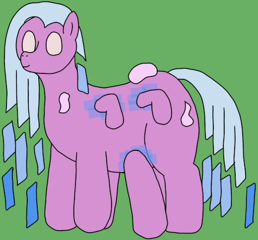

| Commonality | 17.0% (Warped Archons) |
| Durability | 3/10 |
| Strength | Physical: 2/10 Psionic: 0/10 Tapestral: 6/10 |
| Specials | Moderate reality tampering |
| Personality | Mischievous, but well-meaning |
Looms are the lightest puppets Warped Archons create, but form the backbone of any reality-altering force. They are the grunts of tapestral labor, doing the hard work of weaving fresh edits into reality, but their small and frail forms require assistance to bring out their full potential. A group of Looms is called a shop or a quilt.
Manipulators - Tricksters - Deltas - Myrmecophs - Laborers - Looms
Looms somewhat straddle the line between light and heavy puppets, with their somewhat leaner builds rising to an impressive 3' 11" (119cm). Like all warped puppets, their manes are docked short, with the length being made up for by a number of detached panels of hard light that represent their general state of activity (glowing brighter when actively in use). They also have two large and four small detached legs that they use as spinnerettes for conducting their edits on reality, with the spinnerettes being able to travel a short distance away from and freely around them.
Looms are the raw workforce used to make editing reality a tangible task, with their multitude of flexible spinnerettes giving them excellent control over the edits they are actively working on. However, they suffer from a lack of long-term attentiveness needed to maintain their edits, so much so that working in groups is nearly mandatory for edits of any significant scale and the aid of a Hitch to safely maintain a project for an extended length of time. When given the proper support network, however, they are remarkably effective.
A Loom's natural abilities of editing reality also make it a surprisingly fierce opponent in combat, either spinning projectiles out of thin air or manipulating its surroundings to gain an upper hand. This is amplified in groups as the Looms are able to make more, larger edits, though this can get out of hand if too many Looms are pushed to their breaking points and become exceedingly dangerous.
Looms display the same genetic peculiarities as the archons that spawn them, with the addition of the cooperative genes found in Manipulators and Tricksters. This is not unusual for a light puppet, but notably, their ability to coordinate does not seem to originate in any sort of psionic connection. It is believed that Looms can sense nearby edits and can build off of them in real time, as some sort of sub-reality communication.
The Looms, perhaps contrary to their namesake, are quite reckless, messy little things. Not malintented, of course, but occasionally frenetic in their actions. Having their big siblings around is almost a necessity, lest they cause some sort of catastrophic chain of events. They, in some way, mimic my own giddiness at discovering such abilities of reality manipulation, though of course I must be far more careful to avoid any kind of dangerous trickle-down of ideas.
Looms are the first stage of a puppet gestalt figuring out how to modify reality. They represent reckless, frontier-age science; discovering forces one doesn't understand, or handling hazards one does not yet know how to mitigate. It is a crucial first step, but not one without risk, and Looms are the ones to begin the push in earnest.
